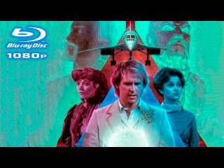
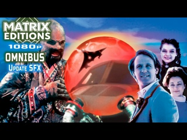
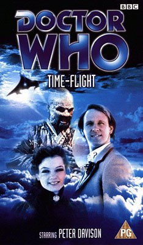
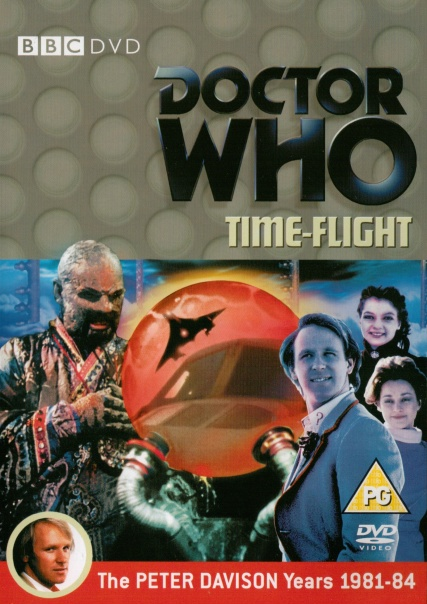
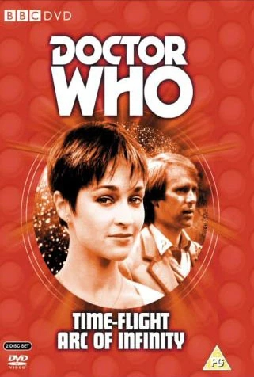

Субтитры: Русские и Английские |  |
|---|---|
с обновлением визуальных эффектов (cunningmunki) Субтитры: отсутствуют |  |
Time-Flight
Дата выхода: 22-30 марта 1982
Формат: 4 эпизода по 25 мин.
| |
ТАРДИС материализуется в аэропорту Хитроу 1982 года — как раз туда, куда Тиган так хотела попасть. Но рейс 191 авиакомпании Конкорд бесследно исчез, и Доктор берётся за расследование. Выясняется, что самолёт протаранил барьер времени и оказался в далёком прошлом — на первобытной Земле, где орудует знакомая фигура. Для наземных сцен Хитроу снимали в аэропорту Гатвик, причём команда работала ночью между последним и первым рейсами. Рексис — создание из обсидиана — стал первым в сериале персонажем, полностью выполненным в трёхмерной компьютерной графике. А Питер Дэвисон и Джон Нэйтан-Тёрнер снимались в камео среди пассажиров Хитроу. Финал сезона намекает на возвращение Мастера — но следующая встреча состоится только в «Короле демонов», в 20-м сезоне.
 VHS - июль 2000 |   DVD+Boxset - 6 августа 2007 |  Blu-ray - 10 декабря 2018 * Версия в нашей группе |
|---|